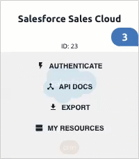
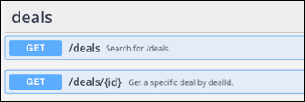
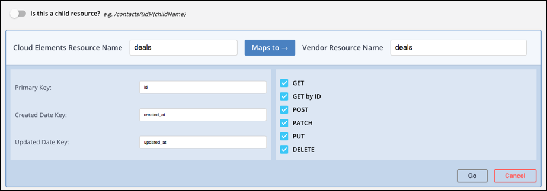
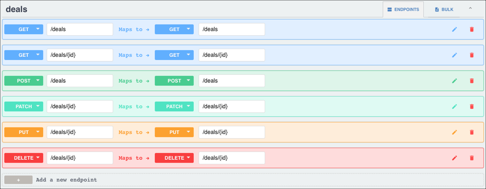
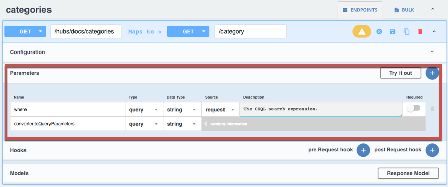
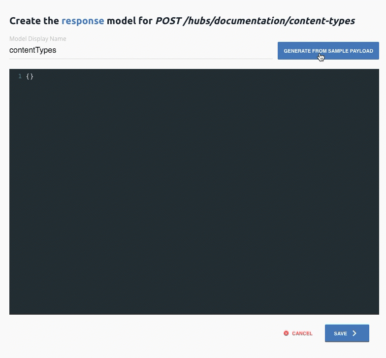

The docs are moving!
Find us at our new Help Center where we've combined our documentation and knowledgebase articles in one easy-to-search location.
We aren't updating the Developer Portal anymore, except for the Element Docs — all updates happen in the Help Center. We're retiring the Developer Portal as you know it in:
Extend Elements
Element Builder gives you the integration tools to extend the current feature set of any of our Elements by adding a resource or method. If your use case requires a resource our Element doesn’t currently support, you can easily add it in yourself using Element Builder.
Each Element starts with a standard set of features, including authentication, paging, errors, events and search. Use Element Builder to add:
- Additional Resources: With an HTTP verb like POST, GET, PATCH, PUT, or DELETE.
- Events: Cloud Elements currently supports building integrations with polling or webhooks capability.
- Bulk Functionality: Cloud Elements supports bulk download of objects in JSON format if the endpoint supports filter by date.
- Docs: API documentation is automatically generated for your updated Element.
Add Resources to an Existing Element
You can extend an element by adding resources. To add a resource, hover over an element card, and then click My Resources. After you arrive on the editable Resources page, follow the instructions in Define New Resources. 
Define New Resources
Defining a resource is a multi-step process, but you do not need to complete each step. For example, you need to add hooks only for advanced or complex use cases. You need to configure bulk for only the resources that you plan to download or upload bulk changes.
When defining resources, begin by adding a resource and providing basic information about the resource as a whole. For each endpoint, provide a description and add any endpoint-level configuration. If needed, add parameters to pass along with each request to each endpoint. For more complex use cases, write hooks needed to perform complex tasks. If the method requires models (POST, PUT, PATCH), define the models for each request and response. Lastly, if you want to be able to upload or download bulk CSV or JSON files, configure bulk for the endpoint.
Before you begin, review the Element Conventions so your element will align with others in the Elements Catalog.
Add a Resource
Adding a resource enables you to create multiple endpoints for a single resource at one time. You can also add individual endpoints one at a time. Cloud Elements automatically groups individual endpoints by resource name when they match.
To add a resource:
- Click Add a new resource at the top of the page.
- Identify if the resource is a child resource, such as
/users/{id}/tasksor/contacts/{id}/tasks. In Cloud Elements Resource Name add the name of the resource as you want to see it in Cloud Elements. For example, enter
dealsto add a/dealsresource to a CRM element. The name you choose is what appears in the API documentation and also creates an endpoint in the hub. For example, the newGET /dealsendpoint appears as GET /deals in the docs and is accessible via thehubs/crm/dealsendpoint. Note: To remain consistent with Cloud Elements naming conventions, we recommend that you name the resources in the plural form. For example, `/deals` not `/deal`.In Vendor Resource Name add the path to the resource at the API provider. The value that you enter is appended directly to the Base URL. If your Base URL ends with a slash
/then do not enter a slash before the resource name. If your Base URL does not end in a slash/, then add one before the resource name.In Primary Key enter the property that uniquely identifies the resource. Primary keys are typically ID fields associated with the resource. In this example, a primary key could be
id.In Created Date Key and Updated Date Key enter the properties that identify the created and updated dates. Created and updated date keys vary widely, but can be
created,createdate, ortimecreatedandupdated,lastModified, ordateModified.Select the methods to add. You will define the methods that you select when you set up the endpoints. Make sure that the methods that you select are supported by the API provider.
For a new deals resource with all methods, our basic resource information looks like this: 
Click Go.
Configure to Configure Endpoints
Configure Endpoints
After you provide the basic information to create a resource, Cloud Elements shows the endpoints associated with each method that you chose to configure for the resource in an editable API documentation format. Use the Endpoints tab to configure each of the endpoints created from the combination of the resource and the methods that you selected in the previous step. If you did not select the correct methods in the previous step, you can add or remove endpoints on the Endpoints tab. 
If you have any authenticated element instances for the element, they appear on the left. Select an element instance to test the endpoints as you build them.
To set up endpoints:
- Click .
- In Resource Type select a resource type other than API only if you want to alter how the API documentation treats the endpoint.
Add a Root Key to identify the top level field of the resource and limit what you send (Request Root Key) or receive (Response Root Key). For example, if you receive the following payload, but only want
items, notnumberOfItemsanditems, enteritems.{ "numberOfItems": 10, "items": { "itemOne" : "hello", "itemtwo" : "world" } }In Pagination Type select to override the default pagination settings of the element. If you select nothing, the default is Supported.
Note: If the API provider does not support paging, Cloud Elements uses the `page` or `nextPage` and `pageSize` parameters to page through the result set.In Next Resource select another endpoint if your use case requires requests to multiple endpoints one after another.
Enter a description. This appears in the API documentation and should help a user understand what the request is for and what to expect in the response. A description of the
GET /dealsendpoint could be: "Retrieves a list of deals. Use CEQL to filter by related fields like company and contact."Tip: The descriptions that you enter for each endpoint should help a user understand what the endpoint does. Keep the descriptions short, no more than three sentences. Start with a verb associated with a method like gets, retrieves, checks, creates, returns, updates, or deletes. Then describe what resource is being manipulated and add any other helpful information about required fields, filtering, or formatting.8. Continue to Add Parameters.
Endpoint Configuration Parameters
| Parameter | Description | Required |
|---|---|---|
| Resource Type | Describes the endpoint, when it executes, and whether it appears in the API documentation. | Yes |
| API — The default resource type where the endpoint makes a request to the API provider and is documented within the API documentation. | ||
| API No Documentation — The endpoint makes a request to the API provider but it is hidden from the API documentation. | ||
| On Delete — The endpoint makes a request when you delete an element instance. Use this type of resource to clean up after someone deletes an instance of the element. | ||
| On Provision — The endpoint makes a request when you authenticate an element instance. Use this type of resource to extract information during the authentication process to add to the element configuration. | ||
| On Refresh — The endpoint makes a request after the element makes an OAuth 2.0 token refresh request. | ||
| Provision Auth Validation — The endpoint makes a request during authentication validation. | ||
| On Provision Webhook — The endpoint makes a request during authentication of an element instance to register one or more webhooks with the API provider. | ||
| On Delete Webhook — The endpoint makes a request during deletion of an element instance to remove one or more webhooks from the API provider. | ||
| OAuth On Authorize URL — The endpoint makes a request bypassing the generic OAuth flow. | ||
| OAuth On Token Exchange — The endpoint makes a request bypassing the generic OAuth flow. | ||
| OAuth On Token Refresh — The endpoint makes a request bypassing the generic OAuth flow. | ||
| OAuth On Token Revoke — The endpoint makes a request bypassing the generic OAuth flow. | ||
| OAuth On Token Request — The endpoint makes a request bypassing the generic OAuth flow. | ||
| OAuth1 On Token Request — The endpoint makes a request bypassing the generic OAuth flow. | ||
| Request Root Key | Identifies the root object in the JSON request that contains the relevant information about the resource. | No |
| Response Root Key | Identifies the root object in the JSON response that contains the relevant information about the resource. | No |
| Pagination Type | Identifies whether the resource supports the default pagination settings of the element. If you leave this parameter empty it defaults to Supported. | No |
| Next Resource | If chaining resources, identifies the endpoint request that follows this request in the chain. | No |
Add Parameters
Endpoint parameters allow you to pass various properties to the endpoint. Use the endpoint parameters to configure searches, pagination, ids, and required fields. You can configure most required and optional parameters for most endpoints. Cloud Elements provides some default common parameters for each method, except DELETE.
Default Parameters for Each Method
| GET | GET {id} | POST, PATCH & PUT | DELETE |
|---|---|---|---|
where: CEQL search expression.In Vendor Name, keep the default converter: toQueryParameters in most cases. For some API providers that use an OData service you can use converter: toODataFilter. In some cases querying in the API provider cannot be supported by the existing parameters and you should contact Cloud Elements support. |
id: The id of a specific object. | body: The object payload to create or update. | No default, but the id of the deleted object is a common parameter. |
| page: The next token or link to get additional results. | |||
| pageSize: The number of records to return. |
Map parameters that you send as part of the request from Cloud Elements on the top row to parameters available to the resource at the API provider on the second row. 
To define a parameter :
- Select an endpoint, and then click .
- If you need to add a parameter, click Add New Parameter.
- In Parameter Name, enter the name of the parameter. The name appears in the API documentation in some cases or can be a value passed to the API provider.
- In Vendor Name enter the name of the parameter to map to. For example, if you are adding an
idparameter, Vendor Name should be the unique id field for the resource likedealId. - In Parameter Type select the source of the parameter.
- In Vendor Type select how the API provider receives the parameter.
- In Parameter Datatype and Vendor Datatype select the data type of the parameter.
- If the Parameter Type is
body, enter the name of an existing model in Model Name. See Add Models to create a model for the endpoint. - If you want to switch the standard workflow where the parameters on the left are part of the request, click Parameter Source, and then select Request. ID, GET,
- To make the parameter a required part of the request, switch Required on.
- In Parameter Description enter a brief description of the parameter. If the parameter appears in the API documentation, this description also appears.
- Click Save:
- If you need to add any more endpoints, continue to Add Endpoints.
- If the resource requires more logic to interact with it, continue to Add Hooks.
- if you need to add a model to a POST, PUT, or PATCh request, continue to Add Models
- If you need to be able to upload or download bulk data in JSON or CSV format, continue to Configure Bulk.
Parameters
| Parameter | Description | Required |
|---|---|---|
| Parameter Type | Body | Body |
| configuration — The value of the parameter is the value of the configuration identified by the Configuration Key specified in the Parameter Name. The Parameter Name must match a Configuration Key in the element configuration. | ||
| header — The value is the request header parameter that matches the Parameter Name. | ||
| path — The value is the portion of the request path that matches the Parameter Name. | ||
| body — The value is the part of the request body that matches the Parameter Name. | ||
| query — The value is the query parameter that matches the Parameter Name. | ||
| form — The value is the value of the key that matches the Parameter Name in the x-www-form-urlencoded body of a request. If a file, then use "file" as the Parameter Name. | ||
| multipart — The value is the value of the key that matches the Parameter Name in the x-www-form-urlencoded body of a request. If a file, then use "file" as the Parameter Name. | ||
| value — The value is the Parameter Name. | ||
| bodyField — The value is the value of the field in a request body that matches the Parameter Name. | ||
| prevBody - Cloud Elements parameter type only. If chaining requests, the value is the part of the request body of the previous request in the chain that matches the Parameter Name. | ||
| prevBodyField - Cloud Elements parameter type only. If chaining requests, the value is the field in the request body of the previous request in the chain that matches the Parameter Name | ||
| Vendor Type | Body | Body |
| configuration — Requests to the API provider pass the parameter value as part of the configuration. | ||
| header — Requests to the API provider pass the parameter value in the header. | ||
| path — Requests to the API provider pass the parameter value in the path. | ||
| body — Requests to the API provider pass the parameter value in the body. | ||
| query — Requests to the API provider pass the parameter value as a query parameter. | ||
| form — Requests to the API provider pass the parameter value as part of the x-www-form-urlencoded body of a request. | ||
| multipart — Requests to the API provider pass the parameter value as part of the x-www-form-urlencoded body of a request. | ||
| value — Requests to the API provider pass the parameter value as a value. | ||
| bodyField — Requests to the API provider pass the parameter value as a body field. | ||
| bodyToken — Requests to the API provider pass the parameter value as a body token. | ||
| no-op — Indicates that the API provider does not need to operate on the parameter. Use no-op if you use the parameter in hooks. | ||
| Parameter Datatype | The datatype of the parameter in the request. | Y |
| integer — A 32 bit binary signed integer. | ||
| long — A 32 bit binary signed integer. | ||
| float — A specific data type for a number. | ||
| double — A specific data type for a number. | ||
| string — A free text string. | ||
| byte — Base64 encoded characters. | ||
| binatry — Any sequence of octets. | ||
| boolean — Any true/false or yes/no data. | ||
| date — Any true/false or yes/no data. | ||
| dateTime — As defined by full-date - RFC3339. | ||
| boolean — As defined by date-time - RFC3339. | ||
| password — A hint to UIs to obscure input. | ||
| Vendor Datatype | The datatype of the parameter as expected by the API provider. See options for Parameter Datatype. | Body |
| Parameter Source | Identifies the side that represents the source, or left side of the parameter. The default request identifies Cloud Elements as the source. If you choose response, you effectively flip the Cloud Elements and API provider sides. | Y |
| Required | Identifies whether the parameter is required. | Y |
| Parameter Description | A free text area to describe the parameter. | Y |
Add Hooks
You can create resource hooks to manipulate any part of a request or response or to operate on a configuration. Resource hooks work differently than global hooks because they happen only on requests and responses related to a specific endpoint. Custom Hooks provides detailed information about using hooks and includes examples.
To create a resource hook:
- In the endpoint edit view, click Add a pre-request hook or Add a post-response hook depending on what you need to manipulate.
- Write the script needed for your use case. See Custom Hooks for more information about the functions and libraries available to you.
- Save the endpoint.
Add Models
Depending on the endpoint method, you can add request models and response models. Request models provide an example of how you should structure the JSON body of a POST, PUT, or PATCH request. Response models give you an idea of what the response from the API vendor should look like.
Request models are required for POST, PUT, or PATCH requests, and the model that you set up should match the Model Name in the body parameter.
You can add request models in two ways: entering the model schema directly or generating the model schema from a sample payload.
To add a model:
- Identify what the request body should look like in the API provider's documentation or acquire a sample payload.
- Click Request Model or Response Model.
- Enter a name for the model.
- Depending on how you want to enter the model:
- Enter the model as a schema object as defined in the OpenAPI version 2.0 Specification.
- Or, click Generate from Sample Payload, paste the sample payload, and then click Generate. 
- Click Save.
Sample Model
The following sample model is a request model called postDeals for a deals resource.
{
"postDeals": {
"id": "postDeals",
"properties": {
"deal": {
"type": "deal"
}
}
},
"deal": {
"id": "deal",
"properties": {
"owner": {
"type": "string"
},
"stage": {
"type": "string"
},
"contact": {
"type": "string"
},
"currency": {
"type": "string"
},
"title": {
"type": "string"
},
"percent": {
"type": "unknown"
},
"value": {
"format": "int32",
"type": "integer"
},
"group": {
"type": "string"
},
"status": {
"format": "int32",
"type": "integer"
}
}
}
}
Configure Bulk
You can set up each resource to be able to upload and download bulk data in either jSON or CSV format.
To configure bulk:
- Click the Bulk tab.
- Select to enable bulk upload, download, or both.
- In each of the fields, select the format that the endpoint expects.
- Click Save Bulk Configuration.
Add Endpoints
You can add a new endpoint for a resource.
To add an endpoint:
- Under the last endpoint associated with the resource, click Add a new endpoint.
- Select the Method for the new endpoint. The left side represents the Cloud Elements side of the endpoint.
- On the right side, select the vendor method associate with the endpoint, and then enter the URL of that endpoint.
- Click Go, and then follow the steps to define the resource.
Delete Endpoints
If you no longer need an endpoint, click  , and then confirm the deletion. To completely remove a resource, delete all of the endpoints associated with it.
, and then confirm the deletion. To completely remove a resource, delete all of the endpoints associated with it.
Copy Endpoints
To copy an endpoint, click . After you copy and endpoint, cloud Elements creates a new resource and endpoint with the word _copy appended to it.
Chaining Resources
You can create sequences of requests and perform operations based on the results of earlier requests in a sequence. Data from earlier resources in a chain are available to hooks through the request_previous_response and request_previous_response_headers parameters. Data is also available to parameters in the prevBodyField and prevBody Parameter Types.
To chain requests start with the earliest requests in the chain. While working with the endpoint configuration, select the next resource in the chain from the Next Resource list.